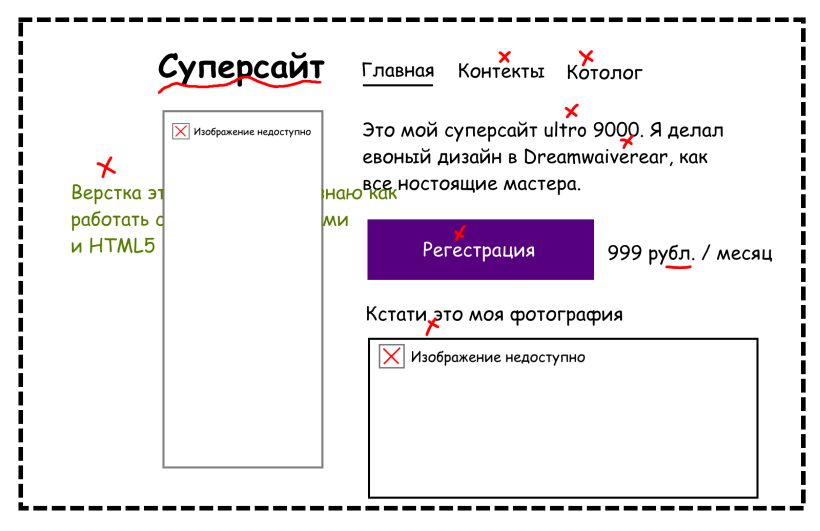

Допустим, вы сделали сайт, но у вас нет тестировщика, который может всё проверить. Вот
короткая
инструкция, на что смотреть, чтобы с большой вероятностью после запуска всё было
в
порядке.

В больших компаниях каждым пунктом из этой статьи могут
заниматься
целые отделы,
сотрудники которых досконально проверяют каждую мелочь — руками или автоматически.
Но
представим, что сейчас под рукой нет IT- департамента. Что можно сделать самостоятельно
и быстро, чтобы
проверить, что всё работает как задумано.
Предупреждение: статья не претендует на академическую
полноту, но точно поможет что
-нибудь не упустить.
Всё посмотреть и прокликать
Сначала нужно проверить, что всё выглядит, как задумано заказчиком сайт совпадает
с макетом, кнопки
работают и ссылки ведут, куда нужно.
Что проверять:
- Элементы страницы расположены как на макете на всех устройствах.
- Сайт одинаково выглядит и работает во всех нужных браузерах.
- Кнопки нажимаются и после этого что-то происходит, слайдеры крутятся, гамбургеры раскрываются.
- Все JavaScript-скрипты работают корректно.
- Отображается правильный контент.
- Загружаются правильные шрифты.
- Фавиконка установлена.
- Текст отображается не кракозябрами (в 2020 такое редко, но бывает).
- Курсор интерактивный на интерактивных элементах и обычный на обычных.
- Отдаются нужные заголовки.
- С локализацией всё в порядке (русская, английская версия).
- Страница не разъезжается, если включить блокировщик рекламы.
Иногда используют автоматические тесты, которые сравниваются отрендеренный результат
кода аля
интерфейс с
рендер-версией приложения. Фактически, это сравнение скриншотов.
Конечно, автотесты можно подготовить и
для
тестирования интерактивных элементов.
Инструменты:
- Реальные браузеры и устройства.
- Эмуляторы (BrowserStack, LambdaTest, Browsera, BrowserShots).
Ошибки JavaScript
Если в коде есть ошибки, их будет видно в консоли разработчика. Также
там можно обратить
внимание на запросы (время и коды ответов) и посмотреть размер
загружаемых файлов. И если
размер большой, обсудить с разработчиками оптимизацию
кода на JavaScript, шрифтов
и изображений.
Веб-формы
Формы — кладезь пользовательских данных и одновременно потенциальный источник
уязвимостей. Формы должны
быть удобными для пользователя и безопасными для сайта.
Что проверять:
- Обязательные поля подписаны.
- Если данные должны быть записаны в базу, проверяем это.
- Выводятся понятные сообщения об ошибках заполнения.
- Проверяем экранирование символов в формах на уровне клиента и сервера.
- Приходят подтверждающие письма (если так задумано).
Неправильные ссылки
Проверьте, что все ссылки ведут на настоящие сайты и не ведут на 404. Для этого тоже
есть
несколько инструментов. На главной не должно быть ссылки на главную.
Локализация
Если пользователи сайта говорят на разных языках, сайт локализуют — готовят тексты на разных
языках
и добавляют переключалку с флагами.
Но недостаточно проверить перевод текстов в интерфейсе, ошибок и документации — есть
ещё
ряд
нюансов. Например, нужно проверить представление дат и времени,
поддерживает ли
шрифт локальные
символы, и есть ли режим RTL для стран, где текст читается справа налево.
Производительность сайта
Пользователи уходят, если сайт грузится медленно. Поэтому нужно проверить, что ваш
сайт не такой.
- Как быстро браузер отобразит страницу?
- Сколько времени занимает доставка ответа от сервера к пользователю?
- Все ли ресурсы загружаются?
Иногда скорость загрузки зависит от контента, который используется на странице.
Вот
советы,
как его оптимизировать.
- Использовать сжатие контента. Например, выбирать подходящие форматы графики
и шрифтов.
- Включить серверное и клиентское кэширование
- Избавиться от неиспользуемых данных, которые подгружаются подзапросом.
Например в
приложении 10
библиотек JS, а используется только одна.
- Правильно настроить файлы Cookie
- Хранить статические данные на отдельном CDN-сервере.
Критерии качества
На курсах сайты верстают и готовят к публикации на основе критериев
качества —
длинного
списка правил, который
нужен, чтобы делать сразу хорошо. Критерии
включают не только то, что написано в этой статье — там
гораздо
больше мелочей, которые
должен знать хороший фронтенд-разработчик.